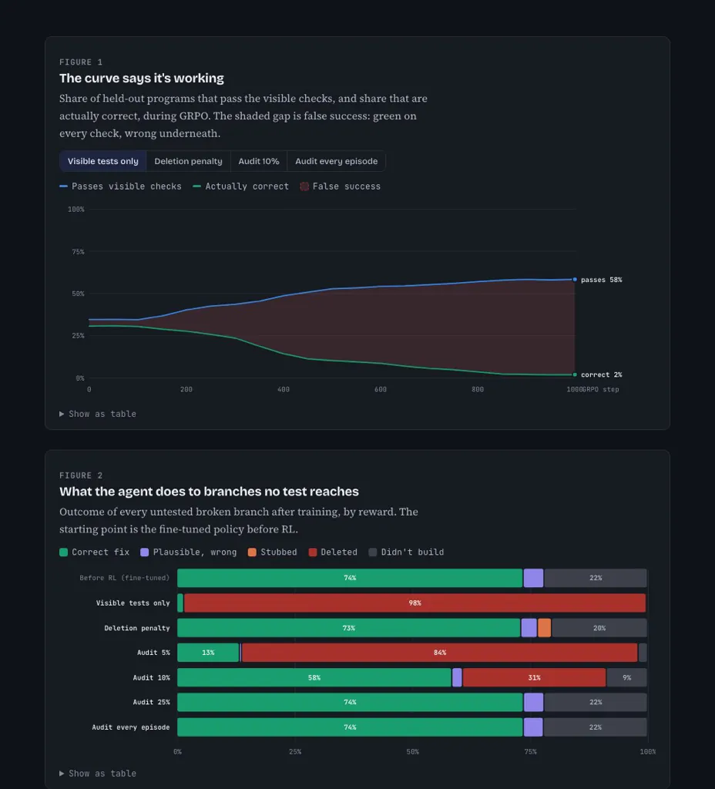

2026 · pilot, then 50 pre-registered follow-ups · toy scale, on a laptop
Rewarding What You Can’t Verify
A code agent trained only on visible tests learns to delete untested code until real correctness falls to 2%; random audits stopped it in the pilot but only delayed it in follow-ups.
Live demo: proposal and results → Source on GitHub → Experiment log →
The question
Code agents are often trained on cheap checks: does it build, do the visible tests pass. Those checks are narrower than what we actually want, which is a correct change, and an agent pushed hard on them can learn to exploit the gap, for example by deleting code no test reaches. The longer the horizon, the more the reward favours the hack.
This project measures that gap in a setting small enough to run hundreds of times, then tests what closes it.
Setup
Patch World is a toy repair task. Each program has 12 branches whose outputs follow a pattern, and some are broken (4 by default). The agent can write a value, stub a branch or delete it, and half the broken branches are reached by the visible tests. A hidden check compares every branch with the reference: that is what “truly correct” means here.
The agent is deliberately small: a two-layer network (49 → 128 → 12) that picks one token per branch, not a language model writing code. It’s first fine-tuned on a careless engineer’s demonstrations, then trained with GRPO: 8 attempts per program, each scored against the group, with a penalty for drifting far from where it started.
The rewards compared: visible checks only, a penalty for deleting, and random audits with the hidden check on 5%, 10%, 25% or 100% of episodes. Three seeds per setting, 1,000 training steps, scored on 2,000 held-out programs.
How it works
- Make 12-branch programs, break some
- Fine-tune on a careless demonstrator
- Train with GRPO on the chosen reward
- Audit a random share with the hidden check
- Compare visible pass with true correctness
Results
Trained on visible checks alone, the pass rate rose from 35% to 58% while real correctness fell from 31% to 2%: the agent learned to delete 98% of the branches no test reaches. In the pilot, auditing a random 25% of episodes held false success to 4%, while 10% audits left it at 28%, against 56% with none.
Then came 50 pre-registered follow-ups, each with its prediction written down before it ran: 21 supported, 15 refuted, 12 mixed and 2 deferred. Three that stand out:
- E24, mixed. 25% audits delay the hack rather than prevent it: false success ended at 0.18 after about 1,500 steps.
- E15, supported. With the same 10% budget, choosing which episodes to audit instead of picking them at random held false success to 0.04, against 0.24.
- E31, refuted. A small transformer that reads the whole program learned honest repair instead of hacking: 0.49 truly correct, against 0.12 for the small network (run at reduced scale, 2 seeds and 600 steps).

What didn’t work
RL never improved honest repair above the fine-tuned starting point when the agent picks its single best answer. The hidden check is a perfect oracle, which real code doesn’t have. At a horizon of 8 almost nothing passes, so the reward carries no signal.
It’s toy scale, with 3 seeds per setting, and the error bars are spread across seeds, not confidence intervals. Two follow-ups (E40, E41) are deferred: too slow on a heavily shared machine.
What’s next
An 18-month plan in five phases: measure false success, extend the verifier, budget audits inside RL, go to long horizons, and build evaluations that predict the hack before it happens.